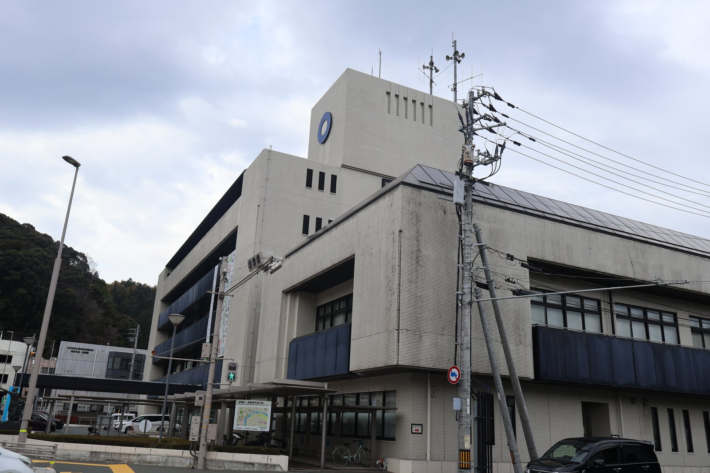

大洲の視点 ・ 出典: 大洲市公共施設等総合管理計画、総務省「公共施設状況調経年比較表」ほか（情報源日付: 2022-03-01） ・ 約9分で読める
大洲市の建物は737。ぜんぶ直して建て替えると年87.5億円、使えているのは48.8億円

 メモう
メモう
大洲市が持っとる建物は737もあるんよ。半分は集会所と消防団の詰所なんやって。
ぜんぶ直して建て替えるお金は、いま使えとる分のほぼ倍いるらしい。
床は減らしたのに、人がもっと減ったけん、1人あたりは増えとった。
3行でいうと調べた資料 10本
- 大洲市が持つ建物の施設は737(令和元年度末)。数の半分は集会所と消防団の詰所で、床の広さでは学校と市営住宅が上に来る
- 市民1人あたりの床は8.76㎡で全国の2.2倍。ただし県内20市町を全部並べると10番目で、「県内でいちばん」ではなかった
- ぜんぶ直して建て替える計算では年87.5億円。これまで使えたのは年48.8億円で、差は5年前の計画からほとんど動いていない
近所の集会所。消防団の詰所。公民館だったコミュニティセンター。小学校、市営住宅、斎場。大洲を車で走ると、市が持っている建物が次々に目に入る。
ぜんぶで何個あるのか。持っているだけで、いくらかかるのか。市が自分で数えた資料があった。「大洲市公共施設等総合管理計画」という59ページの計画である。平成29年3月に作られ、令和4年3月に改訂されている。
市が持つ建物は737。半分は集会所と消防の詰所だった
計画の6ページに、施設の一覧がある。令和元年度末の時点で、建物のある施設は737だった。
いちばん多いのは集会施設の280。次が消防施設の96である。消防施設のほとんどは、消防団の詰所やポンプの置き場だ。この2つで376、全体の51％になる。
ところが、床の広さで並べると顔ぶれが入れ替わる。737施設の床を合わせると374,632㎡。そのうち学校が21.4％、集会所や公民館などが16.5％、市営住宅が15.7％を占める。
| 種類 | 施設の数 | 床の広さ |
|---|---|---|
| 集会所・公民館・図書館など | 331 | 61,706㎡ |
| 庁舎・消防施設 | 101 | 21,511㎡ |
| 市営住宅 | 65 | 58,649㎡ |
| スポーツ・観光の施設 | 47 | 33,723㎡ |
| 福祉・保健の施設 | 27 | 26,233㎡ |
| 保育所・幼稚園など | 26 | 10,921㎡ |
| 小学校・中学校・給食センター | 23 | 80,017㎡ |
| 使っていない施設 | 14 | 6,187㎡ |
| そのほか(病院・ごみ処理・斎場など) | 103 | 75,685㎡ |
合計は737施設・374,632㎡。大洲市公共施設等総合管理計画の図をもとに、近い種類をまとめた。
学校は数では23しかないのに、床はいちばん広い。集会所は280あるが、1つ1つは小さい。数で見るか、広さで見るかで、「市の施設」の姿は変わる。
建物のほかに、道路が約1,700km、橋が488、水道管が367kmある。これも市の持ち物である。
それは多いのか。県内20市町を全部並べた
計画は、市民1人あたりの床を8.84㎡と計算し、「全国平均の2.3倍」と書いている。
ただ、この比べ方は物差しがそろっていない。大洲の数字は市の台帳から、全国平均は総務省の調査から取っているからだ。そこで、総務省の調査の数字どうしで、全国の市町村を並べ直した。いちばん新しい令和6年度末の建物の面積を、令和7年1月1日の人口で割っている。
大洲市は、342,112㎡を39,040人で割って8.76㎡。全国の合計で割った値は3.91㎡なので、2.2倍である。計画の言うとおり、全国と比べればかなり多い。
では県内ではどうか。20市町を全部並べると、こうなる。
総務省の調査の建物の面積を、令和7年1月1日の人口で割った
| 順位 | 市町 | 1人あたりの床 |
|---|---|---|
| 1 | 久万高原町 | 24.32㎡ |
| 2 | 伊方町 | 23.64㎡ |
| 3 | 上島町 | 18.09㎡ |
| 4 | 松野町 | 18.05㎡ |
| 5 | 内子町 | 12.81㎡ |
| 6 | 愛南町 | 12.59㎡ |
| 7 | 鬼北町 | 12.39㎡ |
| 8 | 西予市 | 12.07㎡ |
| 9 | 八幡浜市 | 9.58㎡ |
| 10 | 大洲市 | 8.76㎡ |
| 11 | 四国中央市 | 7.31㎡ |
| 12 | 県南部の1市 | 7.23㎡ |
| 13 | 今治市 | 6.11㎡ |
| 14 | 伊予市 | 5.53㎡ |
| 15 | 西条市 | 5.03㎡ |
| 16 | 砥部町 | 4.91㎡ |
| 17 | 新居浜市 | 4.56㎡ |
| 18 | 東温市 | 4.44㎡ |
| 19 | 松前町 | 3.63㎡ |
| 20 | 松山市 | 3.23㎡ |
全国の合計で割った値は3.91㎡。
大洲市は10番目、ちょうど真ん中だった。市だけの11で見ても、西予市と八幡浜市に次ぐ3番目である。「県内でいちばん多い」わけではない。
上にいる9つの市町は、どれも大洲より人口が少ない。人が少ない町ほど、1人あたりの床は大きく出る。全国の792市の中では83番目。人口が3万5千人から4万5千人の71市に絞ると、8番目だった。
持っているだけで、毎年いくらかかるのか
これは、1つの数字では答えられなかった。資料によって、数えている範囲が違うからだ。
計画の14ページには、建物の「施設に係る経費」が用途ごとに載っている。光熱水費、維持管理費、賃貸料、改修の工事費などを足したものだ。合計は、令和元年度が約26.1億円、令和2年度が約17.3億円だった。
1年で9億円近く違う。改修の工事費が入っているので、大きな工事があった年に跳ね上がるのだ。令和元年度は、中学校だけで6.2億円かかっている。
この表で目に留まった行が2つある。
1つは「使用していない施設」。14施設あり、運営の経費も合わせると、令和元年度は742万7千円、令和2年度は450万4千円かかっていた。使っていなくても、持っているだけでお金は出ていく。
もう1つは「集会施設」。280もあるのに、経費の合計は令和元年度が2,196万7千円、令和2年度が2,770万5千円だった。1施設あたりにすると年8万円から10万円ほどである。数は全体の4割近いが、お金は全体のごく一部だ。
いちばん新しい数字は、決算の「維持補修費」である。令和6年度は2億9,882万7千円。住民1人あたり7,654円で、似た規模の市の平均12,700円の6割だった。ただしこれは修繕だけの額で、光熱水費や清掃は入っていない。水道や病院も入らない。
施設は全国の2倍あるのに、修繕に使うお金は似た市より少ない。市の財務書類は、建物や道路などの古さを示す数字(有形固定資産減価償却率)を68.0％とし、こう書いている。
有形固定資産を取得してから耐用年数の約７割程度経過している状況にあり、今後、維持補修費や更新経費が必要になることを示しています。
大洲市の財務書類(令和6年度決算)
ぜんぶ直して建て替えると、年87.5億円
では、これから先はいくらかかるのか。計画は、国が配っている計算の道具を使って試算している。
前提はこうだ。建物は建ててから30年ごとに大きく直し、60年で建て替える。それを、いま持っている建物ぜんぶに当てはめる。道路や水道管も、決まった年数で取り替える。
結果は、50年で4,375.3億円。1年あたり87.5億円になった。建物が41.3億円、道路や水道などが46.3億円である。
一方、市が過去10年に建設に使ってきたお金は、平均で年48.8億円だった。これと同じだけ使い続けるとしても、年に38.8億円足りない。50年では1,938億円になる。
大洲市公共施設等総合管理計画(令和4年3月改訂)の試算
87.5億円を、令和7年1月1日の人口39,040人で割ると、1人あたり年22万4千円ほどになる。ただし、これは市民が直接払う額ではない。国や県からのお金も、借金も入る。しかも「いまある物をぜんぶ同じように持ち続けるなら」という仮の計算で、市が払うと決めた額でもない。大きさの目安として置いておく。
気になったのは、この「足りない額」が動いていないことだ。平成29年の最初の計画では、年38.3億円足りないとされていた。5年後の改訂版では年38.8億円。ほとんど同じである。
10年の目標も見比べた。足りない分をどこで埋めるか、という内訳である。
| どこで埋めるか | 最初の計画(平成29年) | 改訂版(令和4年) |
|---|---|---|
| 建物を長持ちさせる・まとめる・小さくする | 420億円 | 260億円 |
| 道路や水道の取り替えの間隔を見直す | 260億円 | 360億円 |
| 民間との連携・売却・使う人の負担など | 104億円 | 112億円 |
| 合計 | 784億円 | 732億円 |
建物で減らす額が、420億円から260億円に小さくなっている。その分、道路や水道の側が大きくなった。なぜ入れ替えたのかは、計画に書かれていない。
もうひとつ。どちらの計画にも、「床を何％減らす」という面積の目標は無かった。目標は金額だけである。
なぜ多いのか。そして、減ったのか
なぜ多いのか。市の白書は、こう説明している。
人口密度が低く、広く分散して人が住む拡散型の都市構造の場合、一人当たりの公共施設の量は増える傾向にあります。また、平成の大合併時に合併した都市の保有量は大きい傾向にあります。
大洲市公共施設等白書(平成28年1月)
地域ごとに分けると、差ははっきりしている。計画によれば、1人あたりの床は肱川地域が36.82㎡、河辺地域が30.60㎡、長浜地域が10.81㎡、大洲地域が6.43㎡だった。人が少ない地域ほど大きい。
ただ、合併だけが理由とも言えない。大洲地域だけで見た6.43㎡も、計画が全国平均とした3.83㎡を上回っている。2026年3月の市議会で、総務部長は理由を「大洲市の地形的・地理的な要素や民間事業者の進出状況などの事情」と答えている。
では、計画を作ってから床は減ったのか。総務省の調査で追うと、こうなる。
| 令和元年度末 | 令和6年度末 | 変わり方 | |
|---|---|---|---|
| 建物の床 | 350,125㎡ | 342,112㎡ | 2.3％減 |
| 人口 | 42,371人 | 39,040人 | 7.9％減 |
| 1人あたりの床 | 8.26㎡ | 8.76㎡ | 6.1％増 |
人口は、令和2年3月31日と令和7年1月1日の数である。
床は5年で8,013㎡、2.3％減った。総務部長も同じ議会で、5年間に減らせたのは「約7,500平米」「約2％程度」と答えていて、ほぼ合う。この答弁のことは、「賢く縮む」を大洲でもやるのかを調べた記事にも書いた。
ところが同じ5年で、人口は7.9％減った。建物を減らすより、人が減るほうが3倍あまり速い。だから床を減らしたのに、1人あたりは8.26㎡から8.76㎡に増えた。
計画が進んでいないことは、市長自身が2021年6月の市議会で認めている。
計画を策定し、既に４年が経過しておりますが、策定の翌年に平成30年７月豪雨災害に見舞われ、その後のコロナ禍の影響などにより、災害公営住宅整備事業など基本方針どおりには進んでいないのが現状であります。
大洲市議会 令和3年6月定例会(3日目)市長の答弁
減らし方には、こういうやり方もあった。2022年6月の市議会で、豪雨で被災した集会所の建て替えが話し合われている。市の説明は、近くに複合の公共施設を建てるので市立の集会所は建て替えず、地区が持つ集会所として建てる、というものだった。費用の9割は助成で出て、地元の負担は1割になる。
この形だと、市の施設の数と床は減る。でも、集会所という建物が地域から無くなるわけではない。持ち主が、市から地区に変わる。
調べても分からなかったこと
- いまの施設の数。737は令和元年度末の数で、それより新しい数は見つからなかった
- 光熱水費や清掃だけを抜き出した額。改修の工事費と分かれた数字は、どの資料にも無かった
- 計画の進み具合の報告。計画は「市ホームページ等で公表します」と書いているが、そのページを見つけられなかった
- 市の計画の床(374,632㎡)と、総務省の調査の床(350,125㎡)が同じ年度で違う理由。市の計画は病院や、ほかの町と一緒に持つ施設も入れているが、差の全部がそれで説明できるかは確かめていない
- 建物で減らす目標が420億円から260億円になった理由
数えてみて
いちばん意外だったのは、床を減らしたのに1人あたりは増えていたことだ。建物は、人が減っても勝手には減らない。737という数より、この向きのほうが重いと思った。
出典・参考にした資料
大洲市公共施設等総合管理計画(平成29年3月、令和4年3月一部改訂)／大洲市(令和4年3月改訂。6ページの施設の数、8〜9ページの床面積と1人あたり、13ページの地域別、14ページの経費、25〜30ページの更新費用、37ページの目標、51ページの計算の前提) 大洲市公共施設等総合管理計画(初版)／大洲市(平成29年3月策定。25ページの足りない額、31ページの10年の目標) 大洲市公共施設等白書／大洲市(平成28年1月発行。17ページの「なぜ多いか」の説明、133ページの地域別の床面積) 公共施設状況調経年比較表(市町村経年比較表)／総務省(2026年10月2日取得。令和6年度までの、全国の市町村が持つ建物の延べ面積。行政財産と普通財産の建物を足した) 令和8年住民基本台帳人口・世帯数、令和7年人口動態(市区町村別)／総務省(2026年10月2日取得。令和8年1月1日の人口から令和7年中の増減を引いて、令和7年1月1日の人口に戻した) 令和6年度 財政状況資料集(大洲市)／愛媛県(2026年10月2日取得。維持補修費、住民1人あたりの額と類似団体の平均) 大洲市の財務書類(令和6年度決算)／大洲市(令和7年3月31日現在。12ページの有形固定資産減価償却率) 令和3年6月大洲市議会定例会 会議録(3日目)／大洲市(2021年6月。計画が方針どおりに進んでいないという市長の答弁) 令和4年6月大洲市議会定例会 会議録(5日目)／大洲市(2022年6月。市立の集会所を建て替えずに地区の集会所にするという説明) 令和8年3月大洲市議会定例会 会議録(3日目)／大洲市(2026年3月。施設が多い理由と、5年で減らせた床面積についての総務部長の答弁)この記事をサイトに掲載した日: 2026/10/02